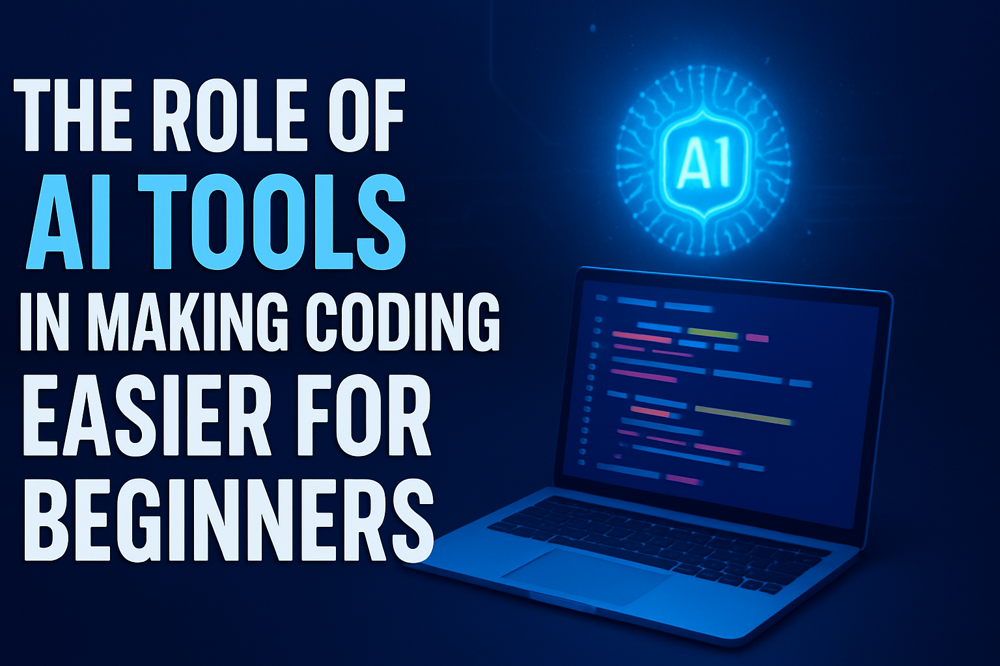

The Role of AI Tools in Making Coding Easier for Beginners

For decades, learning how to code felt intimidating. Thick programming books, endless syntax errors, and hours spent debugging were almost a rite of passage for new developers. Fast forward to today, and things look very different. Artificial Intelligence (AI) is stepping into the coding world, and for beginners, it’s becoming a game changer.
In this blog, we’ll explore how AI tools are reshaping the way beginners learn coding, why they’re helpful, and how you can leverage them without losing the creativity and critical thinking that make you a true developer.
AI Tools: The New Coding Companions
When you hear about AI in coding, tools like GitHub Copilot, ChatGPT, and Tabnine often come up. These tools act like assistants sitting right beside you, helping with suggestions, explanations, and even generating chunks of code.
For beginners, this means less time staring at confusing errors and more time experimenting, building, and actually learning. Instead of being stuck on a problem for hours, you can ask AI for guidance and move forward.
AI isn’t here to replace your journey. Think of it as a supportive friend who keeps you motivated and helps you understand concepts faster.
Breaking Down Barriers for Beginners
One of the biggest struggles for new coders is the overwhelm. There’s just so much to learn — HTML, CSS, JavaScript, frameworks, version control, deployment, and more. AI tools can break down this complexity in two major ways:
- Instant Explanations: Instead of Googling endlessly, beginners can ask AI, “What does this error mean?” or “Explain this piece of code like I’m five.”
- Practical Examples: AI can provide real-world examples in seconds, giving you context you might not find in tutorials.
AI and Confidence Building
Here’s the truth: most beginners quit coding not because it’s impossible, but because it feels discouraging. AI tools can reduce that discouragement by:
- Helping you fix errors quickly.
- Suggesting solutions when you feel stuck.
- Encouraging experimentation by giving instant feedback.
Avoiding the "AI Crutch" Trap
Now, here’s an important balance. While AI tools are incredible, beginners should be careful not to use them as a crutch. Relying too heavily on AI can stunt your growth as a developer.
Here’s how to avoid it:
- Use AI to learn, not just copy. When AI suggests code, take time to understand why it works.
- Try solving problems on your own first, then use AI to check or refine your solution.
- Ask AI for explanations, not just finished code snippets.
Creativity + Coding + AI
One of the most exciting aspects of AI tools is how they merge creativity and coding. Beginners no longer need to feel limited by their technical skills. If you have a creative idea for a website, app, or project, AI can help bridge the gap between imagination and execution.
For example:
- A beginner designer can use AI to generate the boilerplate code for a website, then focus on customizing it visually.
- A beginner filmmaker or photographer can use AI to build an interactive portfolio with ease.
- Creative writers can experiment with building interactive story websites.
The Future of Coding Education with AI
The rise of AI doesn’t mean traditional learning is dead. In fact, it might mean the opposite. Instead of spending months slogging through basics, beginners can learn faster and move to real projects sooner.
Expect to see coding bootcamps, schools, and online courses adopting AI tutors as part of their systems. Beginners will still need to practice and build projects, but the path will be smoother, with fewer roadblocks along the way.
Final Thoughts: AI as Your Coding Ally
If you’re a beginner coder, here’s the key takeaway: AI tools won’t do the hard work for you — but they’ll make the hard work more enjoyable.
They’ll help you debug faster, learn smarter, and focus more on creativity than confusion. The best developers of the future won’t be the ones who avoid AI, but the ones who learn to use it wisely.
br So don’t be afraid to invite AI into your coding journey. Think of it as your coding partner, not your replacement. With your creativity + AI’s assistance, you can learn faster, build better, and grow more confident in your skills.
🔁 Found this helpful? Share this post with a beginner developer who’s struggling with coding.
💡 Next step: Try building a simple project today, and let AI help you along the way.